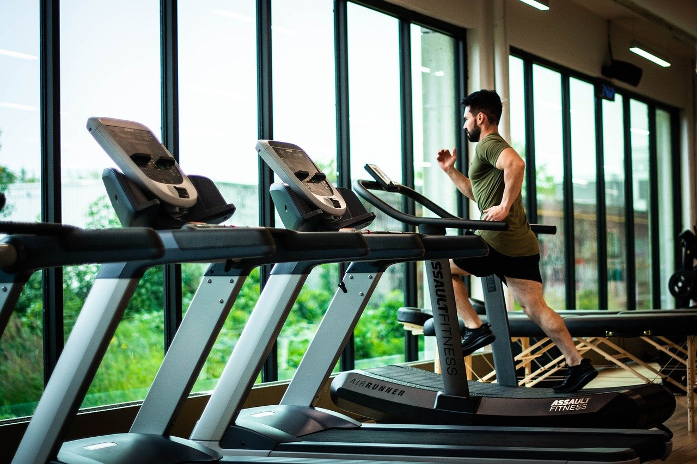

Тренування на схуднення є багатокомпонентною справою отож розберемо її детальніше:
Важливо зберегати баланс між правильним харчуванням та тренуваннями ,якщо ти тренуєшся з ціллю вкилючно схуднення.Деякі аспекти харчування ти можеш розглянути за посиланням:
Про харчування
Розглянемо певні вправи для кардіо тренувань:
- Для високої інтенсивності: Берпі -Вправа, яка задіює все тіло та Стрибки на скакалці-Класика для покращення координації та витривалості.
- Для низької інтенсивності: Швидка ходьба -Простий та ефективний спосіб підвищити серцевий ритм та Біг підтюпцем-Більш інтенсивний варіант ходьби..
- Додаткові поради: Розминка -Не забувайте про розминку перед тренуванням та Заминка-Зробіть заминку після тренування, щоб розслабити м'язи.
Виберіть ті вправи, які вам подобаються і які відповідають вашому рівню фізичної підготовки.
Пам'ятайте, що навіть короткі, але регулярні тренування принесуть користь вашому здоров'ю!